Amendment #237 (S.O. 727(E), 1997)
15 changes: 0 to the First Schedule, 15 to the Second Schedule. 12 applied3 not applied
What it did to the ministries
- grewMinistry of Information and Broadcasting grows from 31 to 38 subjects change 13 · histories: Information & Broadcasting
- shrankDepartment of Space shrinks from 12 to 8 subjects change 15 · histories: Space
The order, page by page
Page 1 of 24
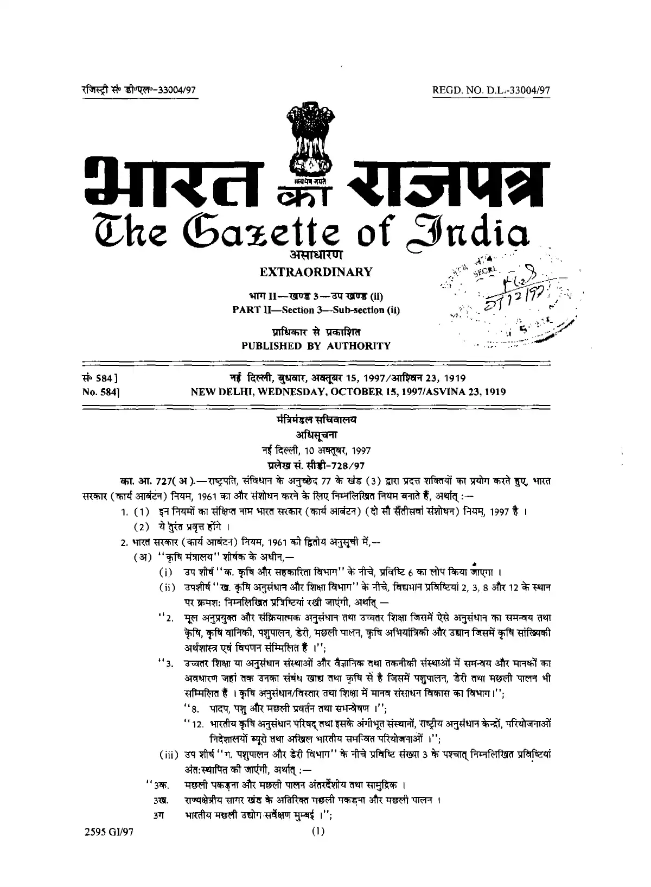
Page 2 of 24
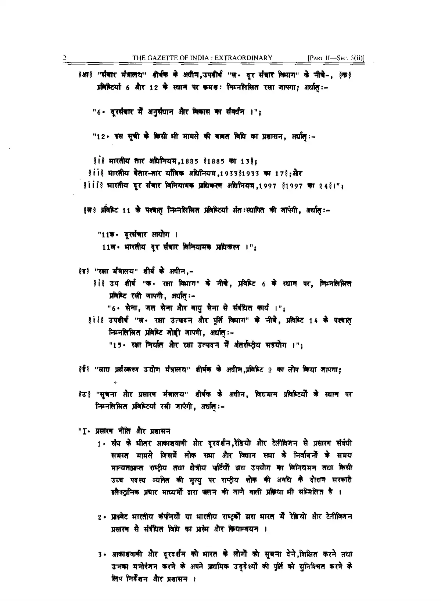
Page 3 of 24
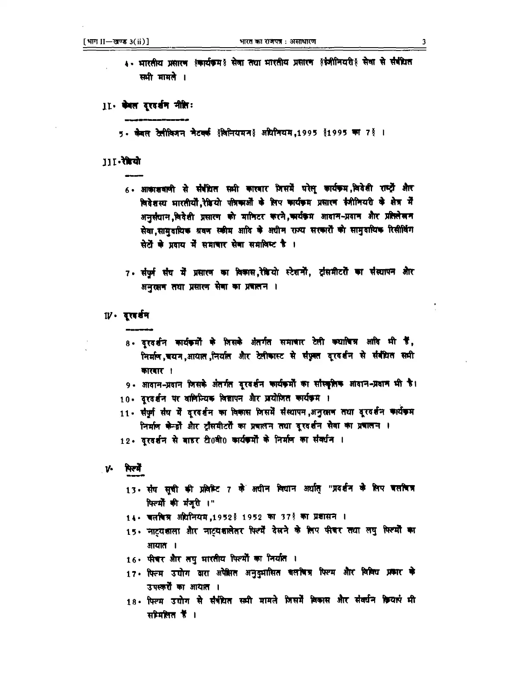
Page 4 of 24
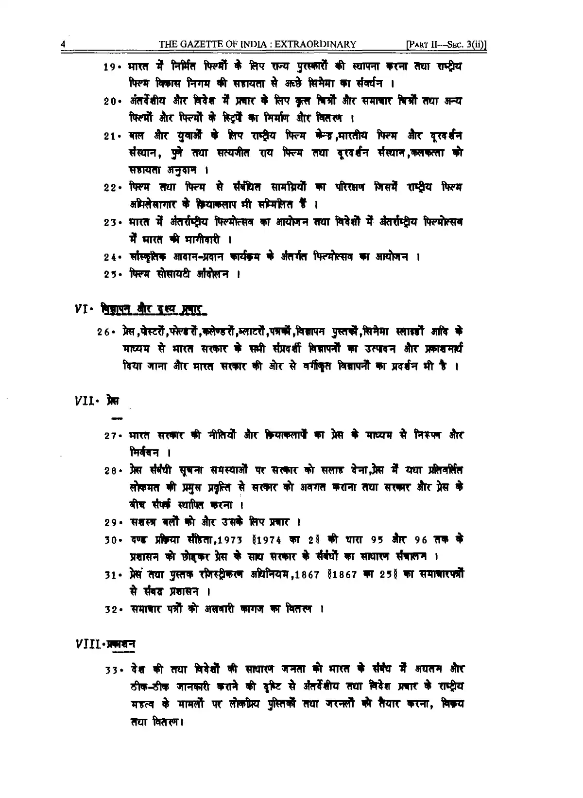
Page 5 of 24
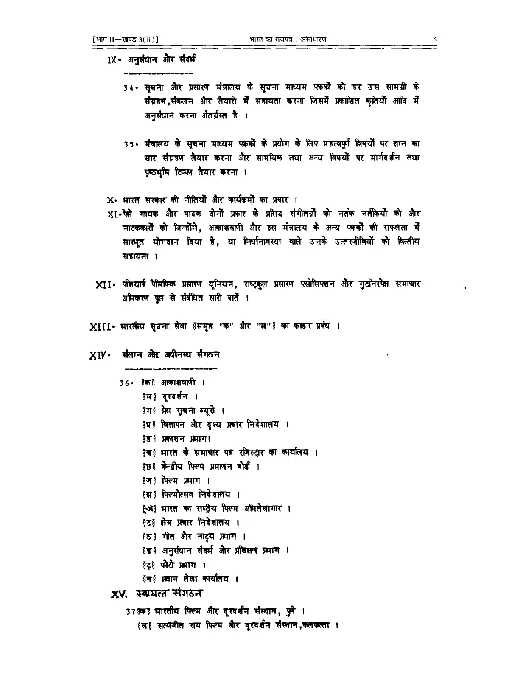
Page 6 of 24
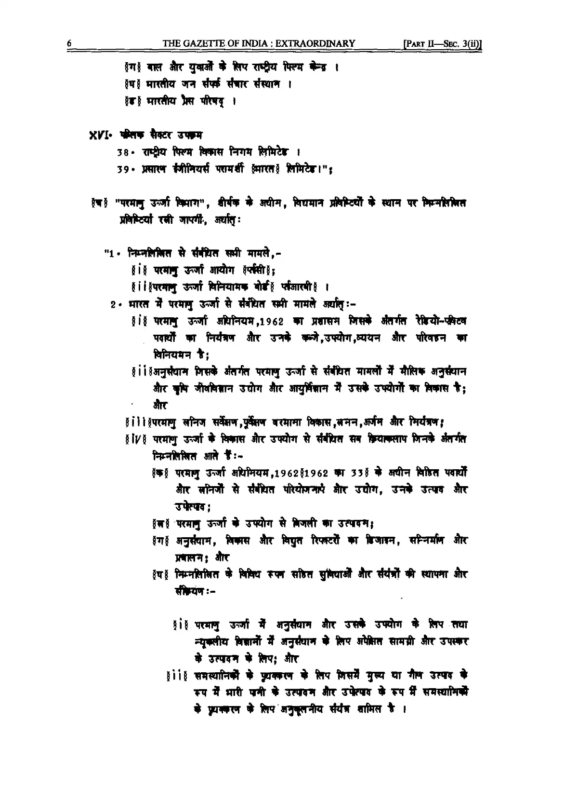
Page 7 of 24
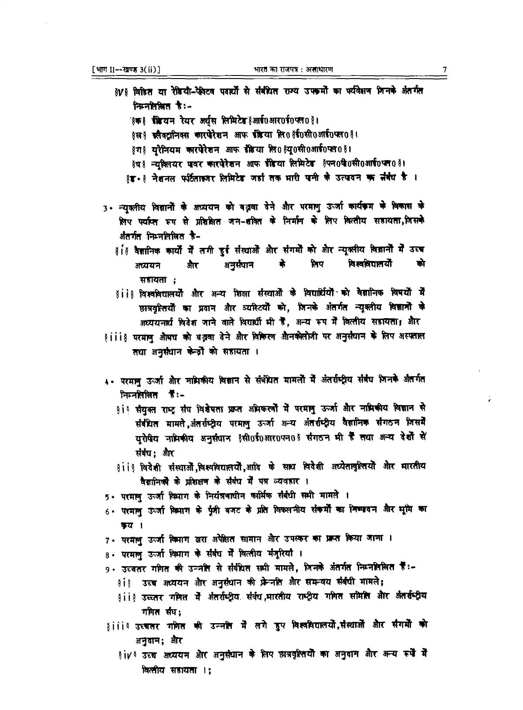
Page 8 of 24
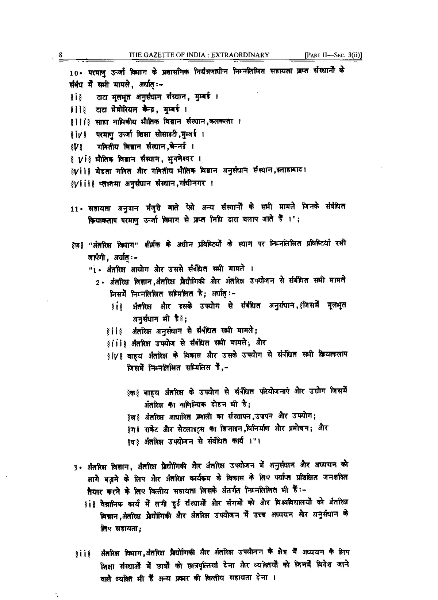
Page 9 of 24
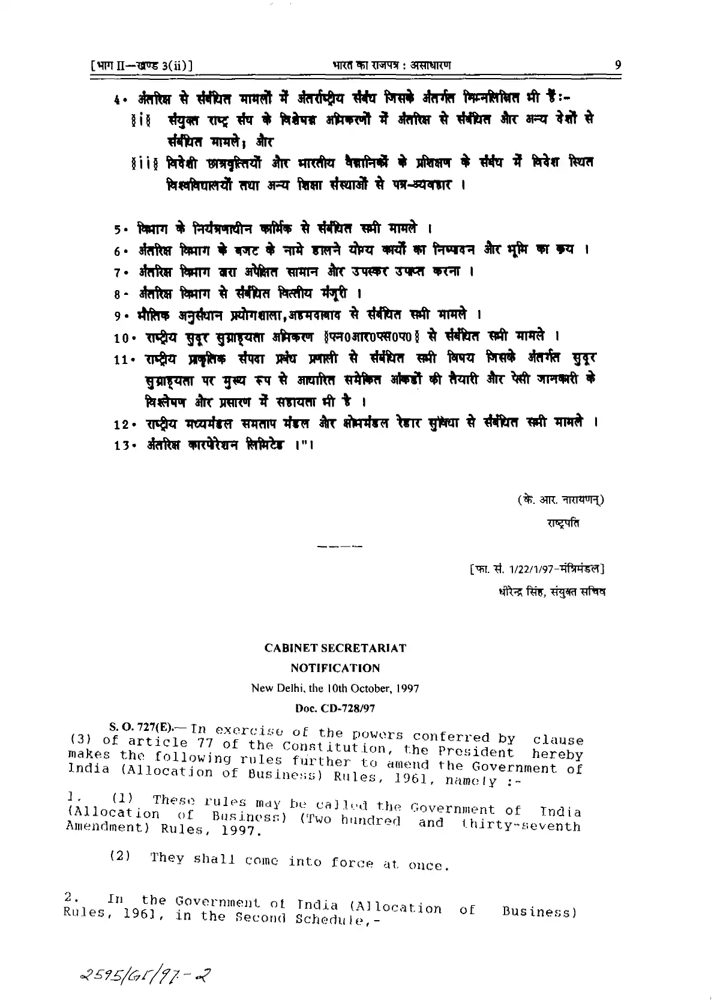
Page 10 of 24
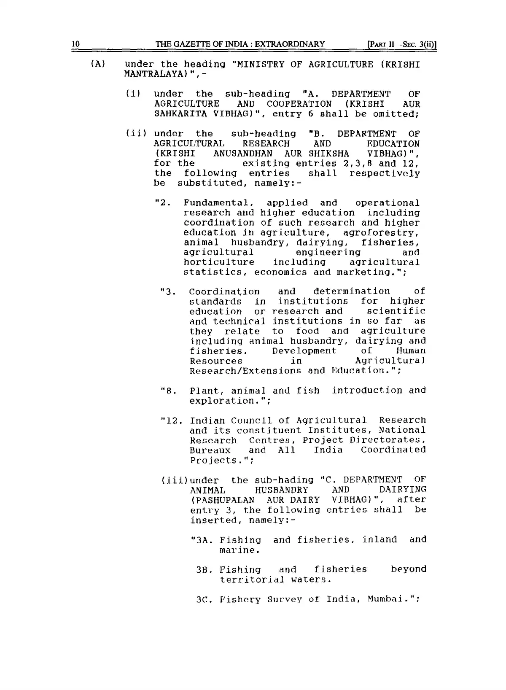
123456Schedule 2 › MINISTRY OF AGRICULTURE › DEPARTMENT OF AGRICULTURE AND COOPERATION › entry 6
applied at schedule 2 › ministry MINISTRY OF AGRICULTURE › department A › part I › entry 6 in the Rules after #237
Schedule 2 › MINISTRY OF AGRICULTURE › DEPARTMENT OF AGRICULTURAL RESEARCH AND EDUCATION › entry 8
- 2. Fundamental, applied and operational research and higher education including coordination of such research and higher education in agriculture, agroforestry animal husbandry, dairying, fisheries agricultural engineering and horticulture including agricultural statistics, economics and marketing.
applied at schedule 2 › ministry MINISTRY OF AGRICULTURE › department B › part III › entry 8 in the Rules after #237
Schedule 2 › MINISTRY OF AGRICULTURE › DEPARTMENT OF AGRICULTURAL RESEARCH AND EDUCATION › entry 8
- 3. Coordination and determination of standards in institutions for higher education or research and scientific and technical institutions in so far as they relate to food and agriculture including animal husbandry, dairying and fisheries. Development of Human Resources in Agricultural…
not applied (the change could not be placed in the Rules as read; see How this document was read)
Schedule 2 › MINISTRY OF AGRICULTURE › DEPARTMENT OF AGRICULTURAL RESEARCH AND EDUCATION › entry 8
- 8. Plant, animal and fish introduction and exploration.
not applied (the change could not be placed in the Rules as read; see How this document was read)
Schedule 2 › MINISTRY OF AGRICULTURE › DEPARTMENT OF AGRICULTURAL RESEARCH AND EDUCATION › entry 12
- 12. Indian Council of Agricultural Research and its constituent Institutes, National Research Centres, Project Directorates Bureaux and All India Coordinated Projects.
applied at schedule 2 › ministry MINISTRY OF AGRICULTURE › department B › part III › entry 12 in the Rules after #237
after Schedule 2 › MINISTRY OF AGRICULTURE › DEPARTMENT OF ANIMAL HUSBANDRY AND DAIRYING › entry 3
- 3A. Fishing and fisheries, inland and marine.
- 3B. Fishing and fisheries beyond territorial waters.
- 3C. Fishery Survey of India, Mumbai.
applied at schedule 2 › ministry MINISTRY OF AGRICULTURE › department E › entry 3A in the Rules after #237
states inferred loose
Page 11 of 24
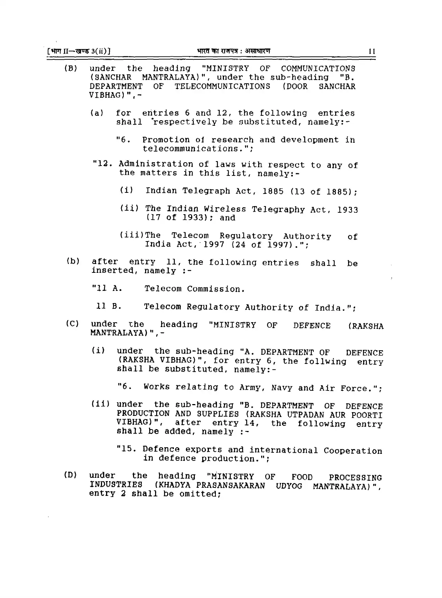
789101112Schedule 2 › MINISTRY OF COMMUNICATIONS › DEPARTMENT OF TELECOMMUNICATIONS › entry 6
- 6. Promotion of research and development in telecommunications.
applied at schedule 2 › ministry MINISTRY OF COMMUNICATIONS › department B › entry 6 in the Rules after #237
Schedule 2 › MINISTRY OF COMMUNICATIONS › DEPARTMENT OF TELECOMMUNICATIONS › entry 12
- 12. Administration of laws with respect to any of the matters in this list, namely:-
- i. Indian Telegraph Act, 1885 (13 of 1885)
- ii. The Indian Wireless Telegraphy Act, 1933 (17 of 1933); and
- iii. The Telecom Regulatory Authority of India Act, 1997 (24 of 1997).
applied at schedule 2 › ministry MINISTRY OF COMMUNICATIONS › department B › entry 12 in the Rules after #237
after Schedule 2 › MINISTRY OF COMMUNICATIONS › DEPARTMENT OF TELECOMMUNICATIONS › entry 11
- 11A. Telecom Commission.
- 11B. Telecom Regulatory Authority of India.
applied at schedule 2 › ministry MINISTRY OF COMMUNICATIONS › department B › entry 11A in the Rules after #237
Schedule 2 › MINISTRY OF DEFENCE › DEPARTMENT OF DEFENCE › entry 6
- 6. Works relating to Army, Navy and Air Force.
applied at schedule 2 › ministry MINISTRY OF DEFENCE (RANSHA MAN TRALAYA) › department A › entry 6 in the Rules after #237
after Schedule 2 › MINISTRY OF DEFENCE › DEPARTMENT OF DEFENCE PRODUCTION AND SUPPLIES › entry 14
- 15. Defence exports and international Cooperation in defence production.
not applied (the change could not be placed in the Rules as read; see How this document was read)
Schedule 2 › MINISTRY OF FOOD PROCESSING INDUSTRIES › entry 2
applied at schedule 2 › ministry MINISTRY OF FOOD PROCESSING IN- DUSTRIES › entry 2 in the Rules after #237
Page 12 of 24
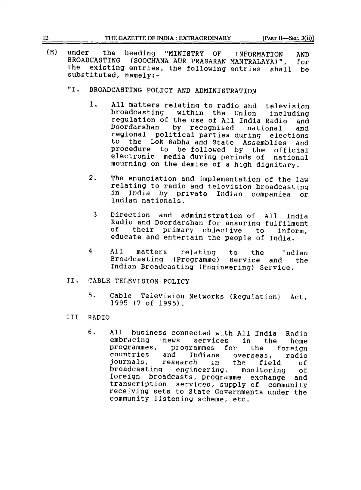
13Schedule 2 › MINISTRY OF INFORMATION AND BROADCASTING
- I. BROADCASTING POLICY AND ADMINISTRATION
- 1. All matters relating to radio and television broadcasting within the Union including regulation of the use of All India Radio and Doordarshan by recognised national and regional political parties during elections to the Lok Sabha and State Assemblies and procedure to be followed by the official…
- 2. The enunciation and implementation of the law relating to radio and television broadcasting in India by private Indian companies or Indian nationals.
- 3. Direction and administration of All India Radio and Doordarshan for ensuring fulfilment of their primary objective to inform educate and entertain the people of India. 4 All matters relating to the Indian Broadcasting (Programme) Service and the Indian Broadcasting (Engineering) Service.
- II. CABLE TELEVISION POLICY
- 5. Cable Television Networks (Regulation) Act 1995 (7 of 1995). III RADIO
and 62 more
- 6. All business connected with All India Radio embracing news services in the home programmes, programmes for the foreign countries and Indians overseas radio journals, research in the field of broadcasting engineering, monitoring of foreign broadcasts, programme exchange and transcription services,…
- 1. Development of radio Broadcasting throughout the Union, installation and maintenance of Radio Stations and Transmitters and operation of broadcasting services.
- IV. DOORDARSHAN
- 8. All business connected with Doordarshan concerning production, selection, import export and telecast of television programmes including news, telefeature films, etc.
- 9. Exchange including cultural exchange of television programmes.
- 10. Commercial advertisements and sponsored programmes on Doordarshan.
- 11. Development of television throughout the Union, including installation, maintenance and operation of _television Programme Production Centres and Transmitters, and operation of television services.
- 12. Promotion of production of television programmes outside Doordarshan.
- V. FILMS
- 13. Legislation under entry 60 of the Union List viz., 'Sanctioning of Cinematograph films for exhibition'.
- 14. Administration of Cinematograph Act, 1952 (37 of 1952).
- 15. Import of feature and short films for theatrical and non-theatrical viewing.
- 16. Export of Indian films, both feature and short films.
- 17. Import of unexposed cinematograph films and various types of equipment required by the film industry.
- 18. All matters relating to film industry including developmental and promotional activities thereto.
- 19. Promotion of good cinema by institution of State awards for films produced in India and assistance through the National Film Development Coporation Limited.
- 20. Production and distribution of documentaries and newsreels and other films and film strips for internal and external publicity.
- 21. Grants-in-aid to the National Centre of Films for Children and Young People, Film and Television Institute of India, Pune, and Satyajit Ray Film and Television Institute Calcutta.
- 22. Preservation of films and filmic materials including all activities of the National Films Archives of India.
- 23. Organisation of International Film Festivals in India and participation of India in International Film Festivals abroad.
- 24. Organisation of Film Festivals under Cultural Exchange Programmes.
- 25. Film society movement.
- VI. ADVERTISING AND VISUAL PUBLICITY
- 26. Production and release of all display advertisements of the Government of India through the media of press, posters, folders calendars, blotters, leaflets, holdings cinema slides, etc. and also release of classified advertisements on behalf of the Government of India.
- VII. PRESS
- 27. Presentation and interpretation of the policies and activities of the Government of India through the medium of the press.
- 28. Advising Government on information problems relating to the Press, keeping Government informed of the main trends of public opinion as reflected in the Press and liaison between Government and the Press.
- 29. Publicity to and for the Armed Forces.
- 30. General conduct of Government relations with the Press excluding the administration of sections 95 and 96 of the Code of Criminal Procedure, 1973 (2 of 1974).
- 31. Administration of the Press and Registration of Books Act, 1867 (25 of 1867) relating to Newspapers.
- 32. Allocation of Newsprint to Newspapers.
- VIII. PUBLICATIONS
- 33. Production, sale and distribution of popular pamphlets, books and journals on matters of national importance for internal as well as external publicity, with a view to imparting to the general public at home and abroad upto date and correct information about India.
- IX. RESEARCH AND REFERENCE
- 34. To assist the Media Units of the Ministry of Information and Broadcasting (Soochana aur Prasaran Mantralaya) in collection compilation and preparation of material involving research into published works etc.
- 35. Building up of a compendium of knowledge on important subjects and to prepare guidance and background notes on current and other topics for the use of the Media Units of the Ministry.
- X. PUBLICITY FOR THE POLICIES AND PROGRAMMES OF GOVERNMENT OF INDIA.
- XI. FINANCIAL ASSISTANCE TO DISTINGUISHED MUSICIANS BOTH VOCAL AND INSTRUMENTAL, DANCERS AND DRAMATISTS WHO HAVE CONTRIBUTED SUBSTANTIALLY TO THE SUCCESS OF ALL INDIA RADIO AND OTHER UNITS OF THE MINISTRY OR THEIR SURVIVORS IN INDIGENT CIRCUMSTANCES.
- XII. ALL MATTERS RELATING TO THE ASIA-PACIFIC BROADCASTING UNION, COMMONWEALTH BROADCASTING ASSOCIATION AND THE NON-ALIGNED NEWS AGENCY POOL. XIII.CADRE MANAGEMENT OF THE INDIAN INFORMATION SERVICE (GROUPS 'A' & 'B').
- XIV. ATTACHED AND SUBORDINATE ORGANISATIONS
- 36.
- a. All India Radio.
- b. Doordarshan.
- c. Press Information Bureau.
- d. Directorate of Advertising and Visual Publicity.
- e. Publications Division.
- f. Office of the Registrar of Newspapers for India.
- g. Central Board of Film Certification.
- h. Films Division. (1) Directorate of Film Festivals.
- j. National Film Archives of India.
- k. Directorate of Field Publicity. (1) Song and Drama Division.
- m. Research Reference and Praining Division.
- n. Photo Division. (0) Principal Accounts Office.
- XV. AUTONOMOUS ORGANISATIONS
- 37.
- a. Film and Television Institute of India Pune.
- b. Satyajit Ray Film and Television Institute, Calcutta.
- c. National Centre of Films for Children and Young People.
- d. Indian Institute of Mass Communication.
- e. Press Council of India. XVI.PUBLIC SECTOR UNDERTAKING
- 38. National Film Development Corporation Limited.
- 39. Broadcast Engineers Consultants (India) Limited.
applied at schedule 2 › ministry MINISTRY OF INFORMATION AND BROADCASTING in the Rules after #237
read page break
Page 13 of 24
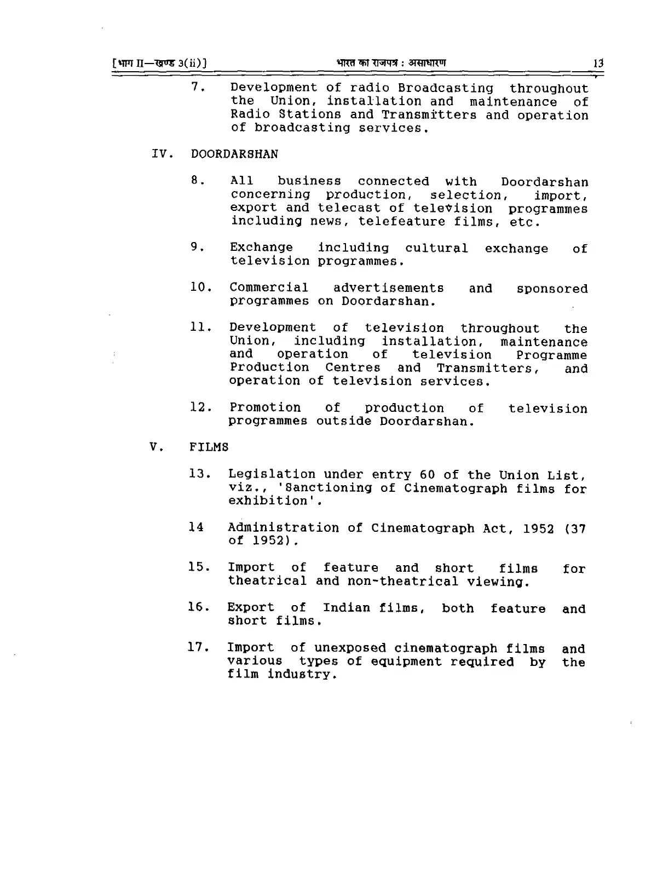
Page 14 of 24
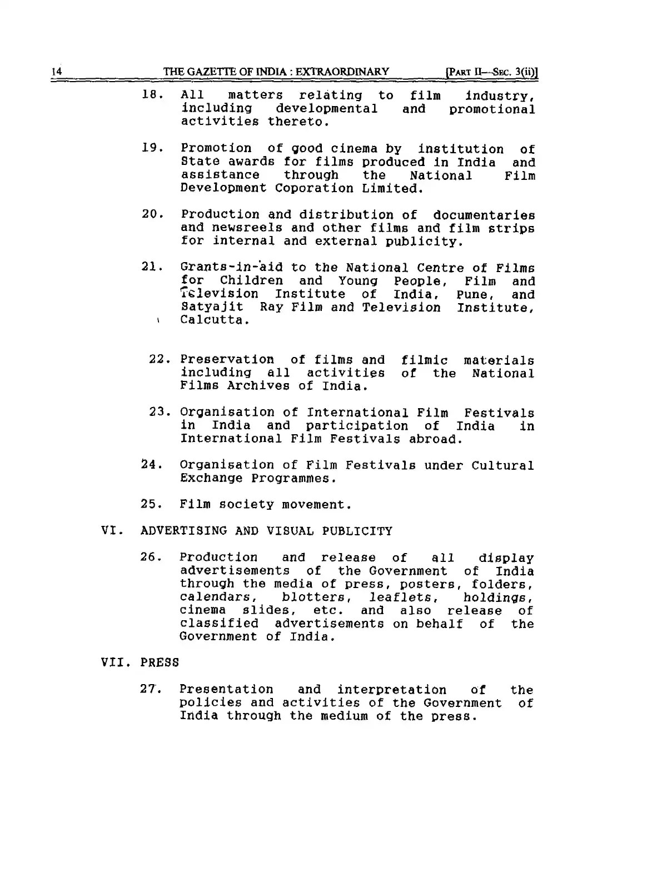
Page 15 of 24
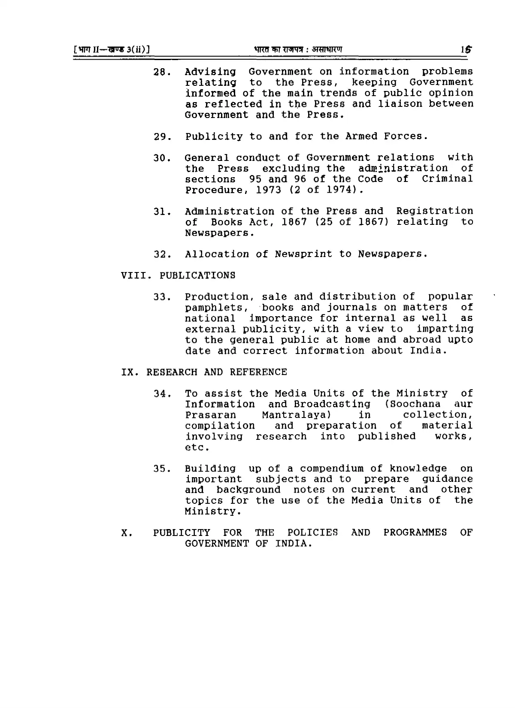
Page 16 of 24
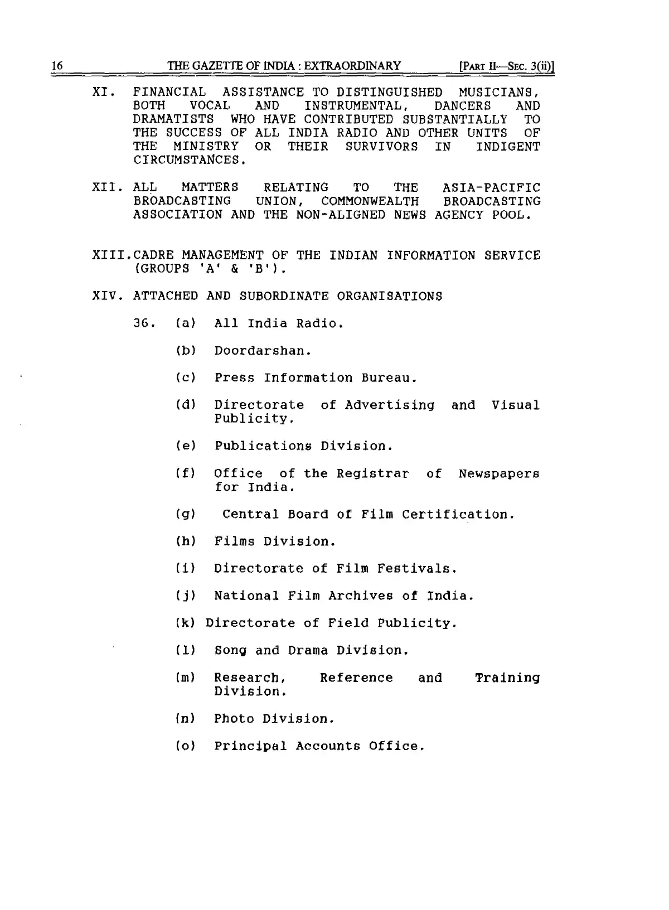
Page 17 of 24
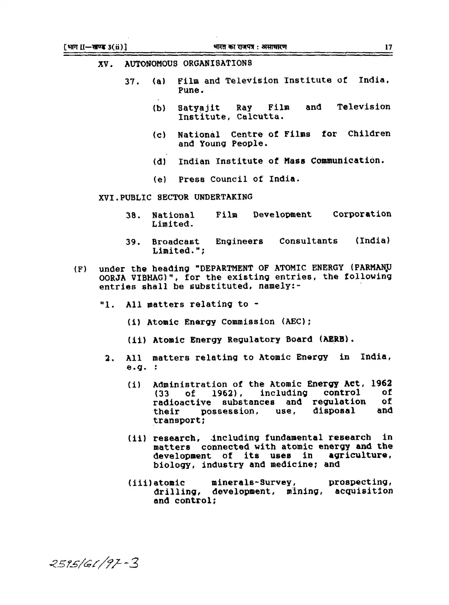
14Schedule 2 › DEPARTMENT OF ATOMIC ENERGY
- 1. All matters relating to - (1) Atomic Energy Commission (AEC)
- ii. Atomic Energy Regulatory Board (AERB).
- 2. All matters relating to Atomic Energy in India e.g. :
- i. Administration of the Atomic Energy Act, 1962 (33 of 1962), including control of radioactive substances and regulation of their possession, use, disposal and transport
- ii. research, including fundamental research in matters connected with atomic energy and the development of its uses in agriculture in biology, industry and medicine; and
- iii. atomic minerals - Survey prospecting drilling, development, mining, acquisition and control 2595/61/97-3
and 35 more
- iv. All activities connected with the development and use of atomic energy, including
- a. projects and industries concerned with substances and minerals prescribed under the Atomic Energy Act, 1962 (33 of 1962); their products and by-products
- b. generation of electricity through the use of atomic energy
- c. design, construction and operation of research and power reactors; and
- d. establishment and operation of facilities and plants including diversification -
- i. for the production of materials and equipment required for research in and the use of atomic energy and for research in the nuclear sciences; and
- ii. for the separation of isotopes including plants adaptable to the separation of isotopes as byproduct and the production of heavy water as a main or subsidiary product.
- v. Supervision of State undertakings concerned with prescribed or radio-active substances including -
- a. Indian Rare Earths Limited (IREL).
- b. Electronics Corporation of India Limited (ECIL).
- c. Uranium Corporation of India Limited (UCI).
- d. Nuclear Power Corporation of India Limited (NPCIL).
- e. National Fertilizers Limited, in so far as production of heavy water is concerned.
- 3. Financial assistance for furtherance of studies in nuclear sciences and for building up adequately trained manpower for the development of the atomic energy programmes, including -
- i. assistance to institutions and associations engaged in scientific work and to Universities for advanced study and research in nuclear sciences
- ii. grant of scholarships in scientific subjects to students in Universities and other educational institutions and other forms of financial aid to individuals including those going abroad for studies in nuclear sciences and
- iii. assistance to hospitals and research centres for furtherance of nuclear medicine and research in radiation oncology.
- 4. International relations in matters connected with atomic energy and nuclear science including -
- i. matters relating to atomic energy and nuclear sciences in the United Nations Specialised Agencies, the International Atomic Energy Agency other International Scientific Organisations including the European Organisation for Nuclear Research (CERN) and relations with other countries; and
- ii. correspondence with institutions Universities, etc. abroad in connection with foreign fellowships and the training of Indian Scientists.
- 5. All matters relating to personnel under the control of the Department of Atomic Energy (Parmanu Oorja Vibhag).
- 6. Execution of works and purchase of land debitable to the capital budget of the Department of Atomic Energy (Parmanu Oorja Vibhag).
- 7. Procurement of stores and equipment required by the Department of Atomic Energy (Parmanu Oorja Vibhag).
- 8. Financial sanctions relating to the Department of • Atomic Energy (Parmanu Oorja Vibhag).
- 9. All matters concerned with the advancement of higher mathematics, including -- ( 1 ) matters relating to the promotion and coordination of advanced study and research
- ii. international relations in higher mathematics, the Indian National Committee for Mathematics and the International Mathematical Union
- iii. grants to Universities. institutions and associations engaged in the advancement of higher mathematics; and
- iv. grant of scholarships and other forms of financial aid for advanced study and research. . All matters relating to the aided institutions under the administrative control of the Department of Atomic energy (Parmanu Oorja Vibhag), e.g.: (1) The Tata Institute of Fundamental Research Mumbai.
- ii. The Tata Memorial Centre, Mumbai.
- iii. The Baha Institute of Nuclear Physics Calcutta.
- iv. The Atomic Energy Education Society, Mumbai.
- v. The Institute of Mathematical Sciences Chennai.
- vi. The Institute of Physics, Bhubaneswar.
- vii. The Mehta Research Institute of Mathematics and Mathematical Physics, Allahabad. (viii) The Institute for Plasma Research Gandhinagar.
- 11. All matters relating to other grant-in-aid institutions concerning activities funded by the Department of Atomic Energy (Parmanu Oorja Vibhag).
applied at schedule 2 › ministry DEPARTMENT OF ATOMIC ENERGY in the Rules after #237
read page break
Page 18 of 24
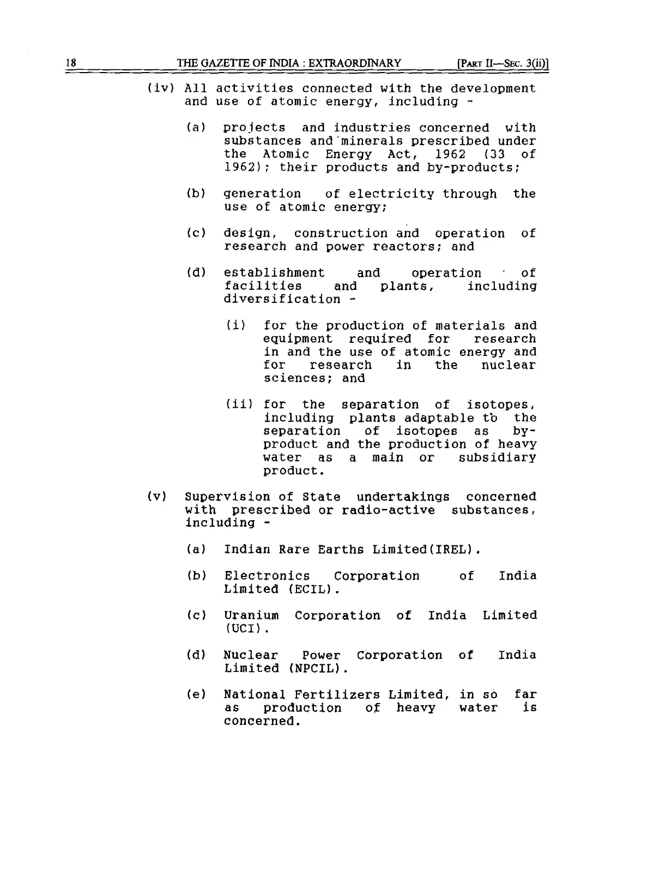
Page 19 of 24
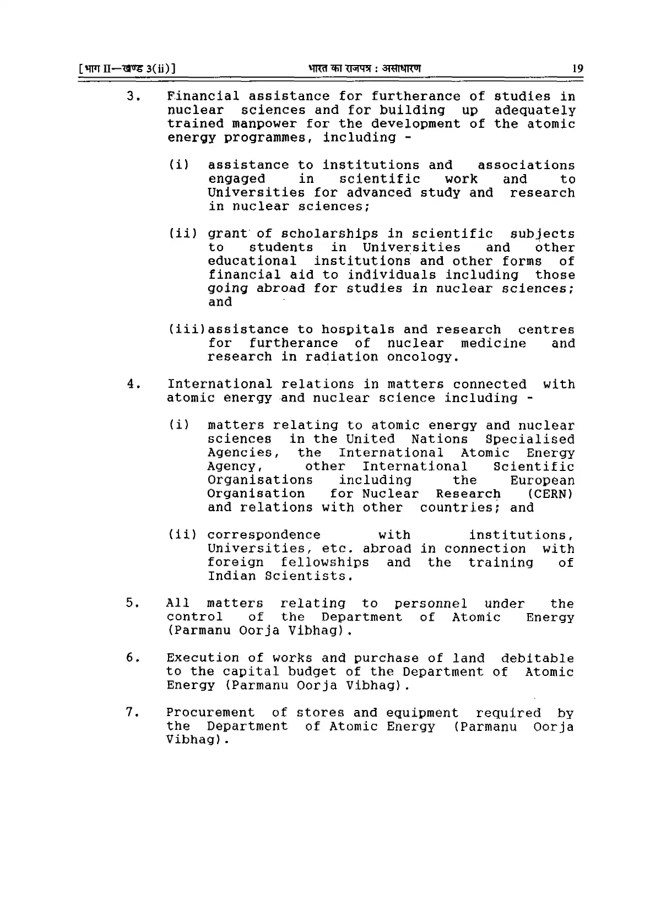
Page 20 of 24
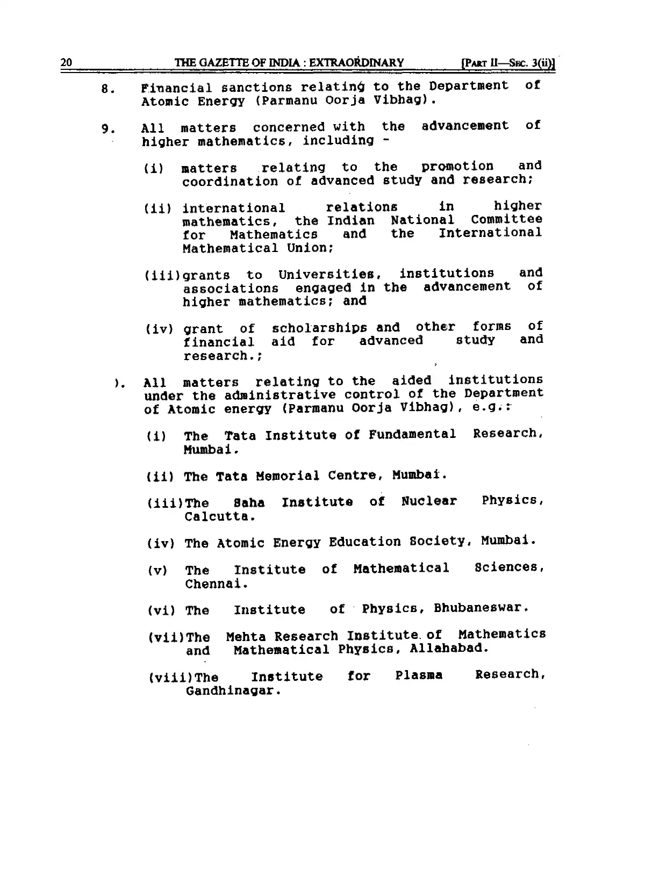
Page 21 of 24
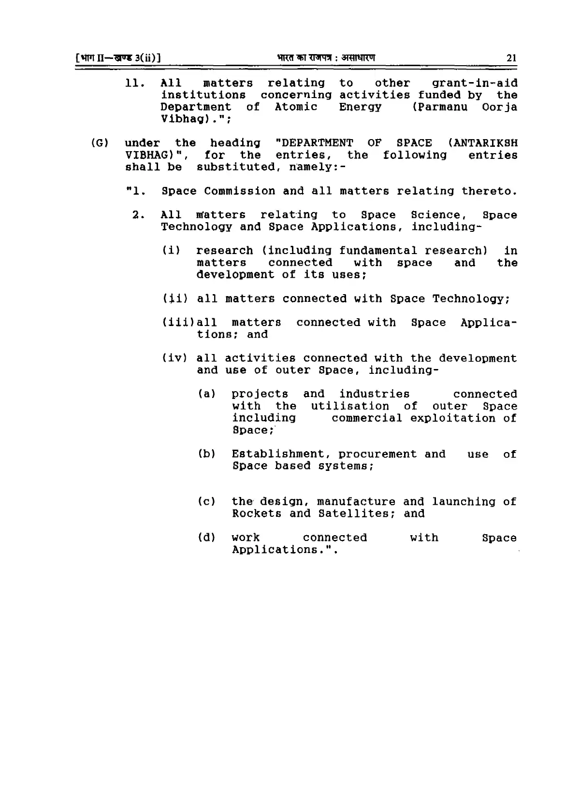
15Schedule 2 › DEPARTMENT OF SPACE
- 1. Space Commission and all matters relating thereto.
- 2. All matters relating to Space Science, Space Technology and Space Applications, including-
- i. research (including fundamental research) in matters connected with space and the development of its uses
- ii. all matters connected with Space Technology
- iii. all matters connected with Space Applications; and
- iv. all activities connected with the development and use of outer Space, including-
and 14 more
- a. projects and industries connected with the utilisation of outer Space including commercial exploitation of Space
- b. Establishment, procurement and use of Space based systems
- c. the design, manufacture and launching of Rockets and Satellites; and
- d. work connected with Space Applications.
- 3. Financial Assistance for furtherance of research and study in Space Science, Space Technology and Space Applications and for building up adequate trained manpower for the development of the Space programme including-
- i. assistance to institutions and associations engaged in scientific work and to Universities for advanced study and research in Space Science, Space Technology and Space Applications.
- ii. grant of Scholarships to students in educational institutions, and other forms of financial aid to individuals including those going abroad for studies in the field of Space Science, Space Technology and Space Applications. International relations in matters connected with Space, including-
- i. matters relating to Space in the United Nations specialised agencies and in relations with other countries; and
- ii. correspondence with Universities and other educational institutions abroad in connection with foreign scholarships and the training of Indian scientists. All matters relating to the personnel under the control of the Department. Execution of works and purchase of lands debitable to the budget of…
- 9. All matters relating to the Physical Research Laboratory, Ahmedabad.
- 10. All matters relating to National Remote Sensing Agency (NRSA).
- 11. All matters relating to the National Natural Resources Management System including the generation of integrated data mainly based on remote sensing and assistance in the analysis and dissemination of such information.
- 12. All matters relating to the National Mesosphere Stratosphere and Troposphere Radar Facility (NMRF).
- 13. Antrix Corporation Limited.
applied at schedule 2 › ministry DEPARTMENT OF SPACE in the Rules after #237
read page break
Page 22 of 24
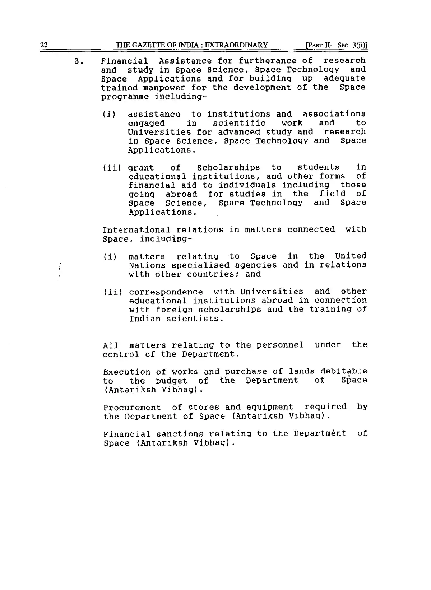
Page 23 of 24
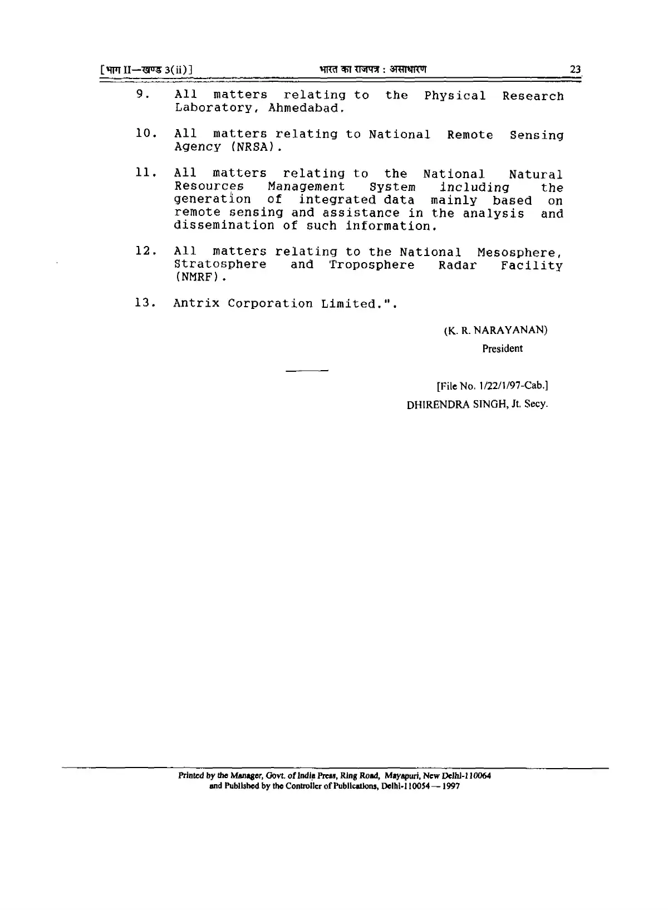
Page 24 of 24
How this document was read
Changes placed by an inference rule
| Change | Rule | Status | What |
|---|---|---|---|
| 6 | loose | accepted | change 6: department DEPARTMENT OF ANIMAL HUSBANDRY AND DAIRYING taken for department DEPARTMENT OF ANIMAL HUSBANDRY AND DAIRY ING PART - I, named loosely |
Known issues
| Change | Issue | Known as |
|---|---|---|
| 3 | change 3: no entry 8 under schedule 2 › ministry MINISTRY OF AGRICULTURE › department B | Entries not in the state |
| 4 | change 4: no entry 8 under schedule 2 › ministry MINISTRY OF AGRICULTURE › department B | Entries not in the state |
| 11 | change 11: no entry 14 under schedule 2 › ministry MINISTRY OF DEFENCE (RANSHA MAN TRALAYA) › department B | Entries not in the state |
From the Government of India (Allocation of Business) Rules, 1961 and their amendments, as published by the Cabinet Secretariat (cabsec.gov.in), read by orgpedia. The readings of the older scanned gazettes have known gaps.